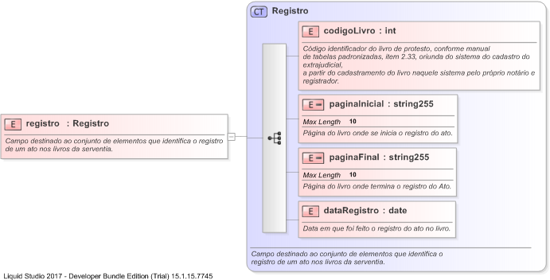

| Definition Type: | Element |
| Name: | registro |
| Namespace: | http://www.tjsc.jus.br/selo/XMLSchema |
| Type: | nsS:Registro |
| Containing Schema: | xsComum.xsd |
| MinOccurs | (1) |
| MaxOccurs | (1) |
| Abstract | |
| Documentation: | Campo destinado ao conjunto de elementos que identifica o registro de um ato nos livros da serventia. |
|  |
|
|
|||||||||||||||||||||